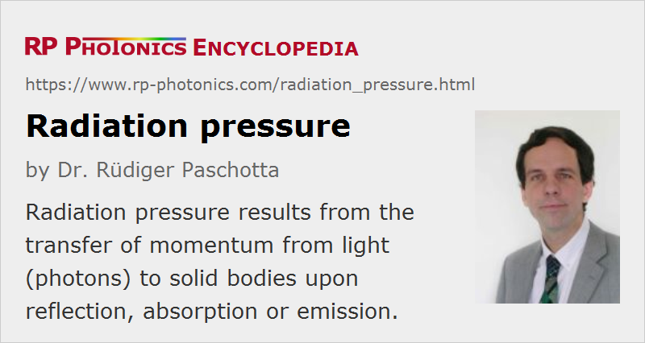

Radiation Pressure
Definition: a mechanical pressure resulting from incident light or other radiation
German: Strahlungsdruck
Categories: quantum optics, physical foundations
How to cite the article; suggest additional literature
Author: Dr. Rüdiger Paschotta
When light is reflected on a mirror, for example, the mirror is subject to some radiation pressure – i.e., to a small mechanical force which is related to the transfer of momentum from the radiation to the solid material. (Strictly speaking, the pressure is the force per unit area; it is related to the optical intensity rather than to the optical power.) Such forces have been first considered by the astronomer Johannes Kepler. James Clerk Maxwell, the creator of the famous Maxwell equations, has later substantially developed further the understanding of light forces; quantitative predictions have been derived from Maxwell equations. Light forces have later been experimentally proven by the Russian physicist Pyotr Lebedev in 1900 [1].
As the simplest case, light with normal incidence on a perfectly reflecting mirror can be considered. The propagation direction of each photon of the light is reversed, which implies that twice the momentum of each incident photon is transferred to the mirror. The momentum of a photon is hν / c. For non-normal incidence (but still complete reflection) with an angle of incidence θ, the radiative force is reduced by the factor cos θ; in total, the resulting force can be calculated with the following equation:
where P is the incident optical power. For the radiation pressure (force per unit area), we have
with the optical intensity I. This equation contains the factor cos2 θ rather than cos θ, because the angled incidence also increases the illuminated area on the mirror.
Modified equations can be derived for other situations; for example, if radiation is fully absorbed on a solid body, the radiative force is F = P / c. The factors of 2 and also cos θ are missing here, since photons are not reflected with the opposite momentum, and the angle of incidence can obviously not be relevant – except for the radiation pressure due to the above-mentioned increase of the illuminated area, here resulting in a factor cos θ (without the square).
Radiation forces can also result from the emission of light, e.g. thermal emission or laser emission.
Weakness of Light Forces
Essentially due to the very high velocity of light c, the radiative force e.g. for normally reflecting a laser beam with 1000 W is rather small: only ≈ 3.3 μN. Therefore, it is not easy to measure the radiation pressure. However, modern technology, e.g. based on microelectromechanical systems (MEMS), provides some powerful means.
Note also that the actual radiation pressure can occur together with other mechanical effects, which may be stronger. For example, they can result from the interaction of a heated surface with surrounding air. That effect and not the radiative pressure has been found to be essential for the workings of a Crookes radiometer, containing lightweight mirrors fixed to a rotating part.
Applications of Radiation Pressure
Even though radiation pressure is usually very weak effect, there are some real or at least proposed applications:
- Light forces on atomic particles are exploited in various methods of laser cooling.
- Solar sails have been developed which could be used for the propulsion of small spacecrafts. Even though the obtained forces are quite small, they can substantially modify the momentum of an object if they are active during very long travel times. A crucial factor for practical applications is that such solar sails are made of very lightweight and yet durable materials.
- Beam-powered propulsion of spacecraft may be realized with high-power lasers. However, such propulsion would provide only weak forces while requiring enormous amounts of power. On the other hand, the achieved momentum per kilogram of used fuel (e.g. a nuclear fuel) could be far higher than for rocket propulsion, for example. Therefore, that approach has been suggested for extremely distant travel.
- It is possible to use the radiation pressure effect for measuring the optical power of a high-power laser beam [2]. Although rather low mechanical forces have to be measured, an advantage is that the optical power to be measured does not need to be absorbed, so that it stays available for an application, and no substantial heat power needs to be dissipated.
Questions and Comments from Users
Here you can submit questions and comments. As far as they get accepted by the author, they will appear above this paragraph together with the author’s answer. The author will decide on acceptance based on certain criteria. Essentially, the issue must be of sufficiently broad interest.
Please do not enter personal data here; we would otherwise delete it soon. (See also our privacy declaration.) If you wish to receive personal feedback or consultancy from the author, please contact him e.g. via e-mail.
By submitting the information, you give your consent to the potential publication of your inputs on our website according to our rules. (If you later retract your consent, we will delete those inputs.) As your inputs are first reviewed by the author, they may be published with some delay.
Bibliography
| [1] | P. Lebedev, “Untersuchungen über die Druckkräfte des Lichtes”, Annalen der Physik 311 (11), 433 (1901) |
| [2] | P. Williams et al., “Portable, high-accuracy, non-absorbing laser power measurement at kilowatt levels by means of radiation pressure”, Opt. Express 25 (4), 4382 (2017), doi:10.1364/OE.25.004382 |
See also: light forces, laser cooling, photons, optical intensity
and other articles in the categories quantum optics, physical foundations
|  |
If you like this page, please share the link with your friends and colleagues, e.g. via social media:
These sharing buttons are implemented in a privacy-friendly way!